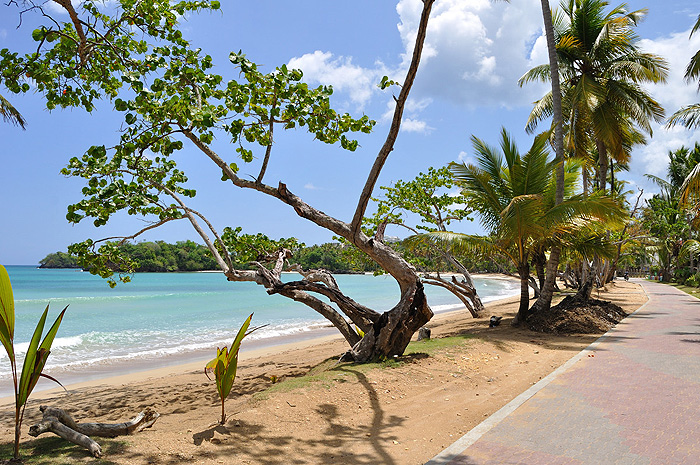

Playa Bonita
Las Terrenas, Samaná, RD.

Las Terrenas es una localidad situada en la costa noreste de la República Dominicana, en la provincia de Samaná.
Es conocida internacionalmente por su alto índice de turismo y por sus playas de arenas blanca y aguas claras. Entre los visitantes más frecuentados en la zona están los europeos mayormente de nacionalidad Española, Italiana, Francesa y Alemana.
Unos de los pueblos o comunidad más conocidas de la localidad, es el pueblo de los pescadores. Su nombre se debe a que la localidad anteriormente estaba mayormente poblada por pescadores.
Entre las playas más conocidas están la playa de las Terrenas, playa Punta Poppy, playa Coson, playa Bonita y las Ballenas.
Tokyo
Japón, La ciudad del sol naciente.

Es la capital de facto4 de Japón, localizada en el centro-este de la isla de Honshu, concretamente en la región de Kanto. En conjunto forma una de las 47 prefecturas
de Japón, aunque su denominación oficial es metrópolis o capital (都 -to). La ciudad es el centro de la política, economía, educación, comunicación y cultura popular del país.
Cuenta también con la mayor concentración de sedes corporativas, instituciones financieras, universidades y colegios, museos, teatros, y establecimientos comerciales y de entretenimiento de todo Japón.
Con una población que supera los 13 millones de habitantes, se subdivide en 23 barrios (区 -ku); 26 ciudades (市 -shi); un distrito (郡 -gun) subdividido en tres pueblos (町 -chō o -machi) y una villa
(村 -son o -mura); y cuatro subprefecturas (支庁 -shichō) subdivididas en dos pueblos y siete villas, que representan a varias pequeñas islas al sur de Honshu que se extienden más allá de 1800 km de Shinjuku,
capital de la metrópoli y sede de la gobernación.